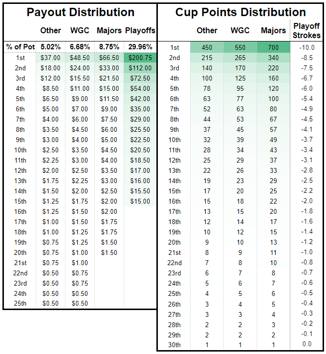

The ten tournaments on the PGC Tour schedule will be split into 3 tiers.
Top tier - The Masters, PGA Championship, U.S. Open, The Open
Middle Tier - WGC-Mexico Championship, Players Championship, FedEx-St Jude
Invitational
Bottom Tier - Waste Management Open, RBC Heritage, The Memorial
Each tier will have a different points and payout structure outlined below.
The field for each tournament will be split into five groups that will be finalized on
the Monday morning prior to each tournament. Groups will be chosen based on the
PGC
Rating.
Each member chooses 2 golfers from each of the 5 groupings to create your 10 golfer team
for the tournament. You will make new picks and have a new team for each tournament on the schedule.
During Rounds 1 and 2 of the tournament your team’s score will be the average strokes of
all 10 golfers on your team.
Rounds 3 and 4 of the tournament your team’s score will be the average
strokes of the 5 lowest golfers on your team that day.
The leaderboard will look just like a PGA leaderboard and
tracked live on the Live Leaderboard page.
Teams must have 5 golfers make the weekend cut line or their team will be cut from
the PGC tournament. Any golfers that withdraw before cut day will receive a score of 8-over par until cut day.
After every tournament of the season the top 30 finishers will receive playoff points.
Winners of top tier tournaments will win 700 points.
Winners of middle tier tournaments will win 550 points.
Winners of bottom tier tournaments will win 450 points.
Points will be distributed to the top 30 finishers similar to how FedEx Cup points are
distributed on the PGA Tour. Full distributions can be found below.
At the end of the season the top 30 teams in the standings will make the PGC Playoff
tournament.
Each team will start the playoff tournament under par based on the distribution
below.
The playoff tournament will be 12-rounds long throughout all three FedEx Cup Playoff
events (Northern Trust, BMW Championship, TOUR Championship). Members that qualify for the playoff tournament
will pick their team prior to the Northern Trust as usual and this will be your team of golfers through the
entire playoffs.
The Northern Trust will run just like a normal tournament.
The BMW Championship will only count your top 5 golfers in all 4 rounds.
The TOUR Championship will only count your top 3 golfers in all 4 rounds.
After every tournament the top 20-25 finishers will win money earnings. Earnings will
accumulate during the season and will be paid out at the end of the year.
For top tier tournaments, the top 20 finishers will win money ranging from $66.50 for
1st to $1.50 for 20th.
For top middle tier tournaments, the top 25 finishers will win money ranging from $48.50
for 1st to $0.50 for 25th.
For bottom tier tournaments, the top 25 finishers will win money ranging from $37.00 for
1st to $0.50 for 25th.
Full distributions can be found below.
